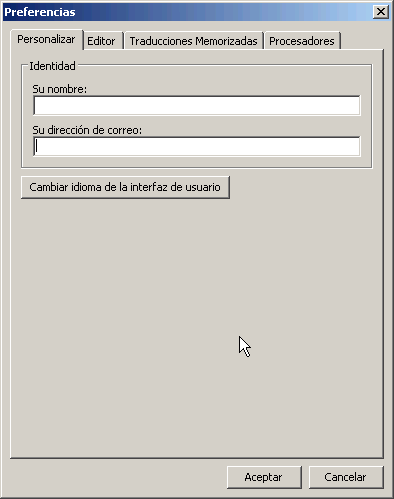
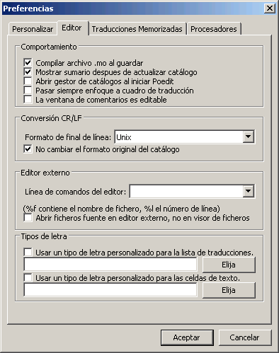
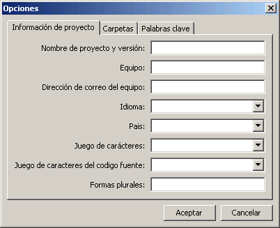
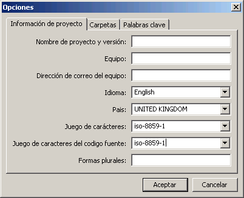
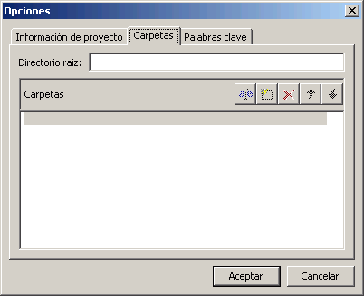
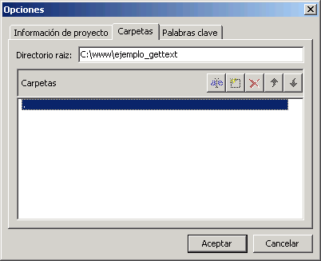
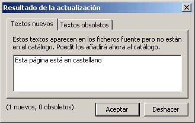
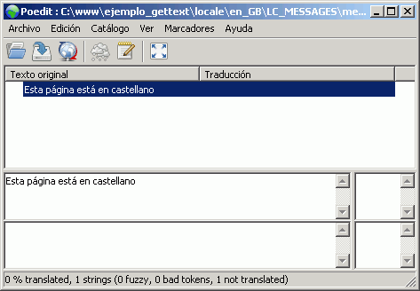
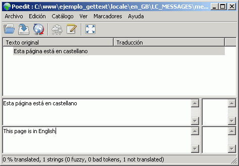

Hacer un sitio web multilingüe, es decir, disponible en varios idiomas, no es fácil. Si el número de páginas es pequeño y el contenido no cambia a menudo, una solución es utilizar las funciones gettext incluidas en PHP. Gettext es un conjunto de utilidades creadas por Ulrich Drepper en 1995 y que forman parte del proyecto GNU y que facilita la traducción de programas.
Básicamente, la utilización de gettext en PHP es el siguiente:
La extensión Gettext está normalmente incluida en PHP (por ejemplo, lo está en XAMPP), aunque si no lo está, se puede utilizar la biblioteca php-gettext.
Supongamos que tenemos la siguiente página en castellano, pero también queremos que esté disponible en inglés:
<?php
print "<p>Esta página está en castellano</p>\n";
?>
<p>Esta página está en castellano</p>El primer paso es marcar las cadenas a traducir. Las cadenas que se quieran traducir, deben enviarse a la función gettext($cadena), aunque normalmente se utiliza el alias _($cadena):
<?php
print "<p>" . gettext("Esta página está en castellano") . "</p>\n";
?>
<p>Esta página está en castellano</p>
<?php
print "<p>" . _("Esta página está en castellano") . "</p>\n";
?>
<p>Esta página está en castellano</p>En el menú "Archivo > Preferencias" se puede introducir el nombre y dirección de correo del autor de la traducción...

... y el formato del archivo (finales de líneas):

En Poedit los archivos .po se llaman catálogos. Cada archivo .po contiene la traducción de las cadenas a un idioma determinado. Para crear un nuevo catálogo, hay que elegir el menú "Archivo > Nuevo catálogo...." y completar primero las preferencias del catálogo.
En la pestaña "Información del proyecto" deben rellenarse al menos los campos:

Para la página de ejemplo anterior, si queremos preparar la traducción al inglés, deberíamos indicar "English" en Idioma y "United Kingdom" en Country e "iso-8859-1" en los juegos de caracteres:

En la pestaña "Carpetas", debe incluirse en "Directorio raíz" el camino hasta la carpeta en la que se encuentra la página web y en "Carpetas" debe incluirse el camino . (el carácter punto hace que busque en el directorio indicado en Directorio raíz). Para añadir un camino hay que hacer clic en el botón "Nuevo elemento".

Si la página de ejemplo se encuentra en el directorio c:\www\ejemplo_gettext, deberíamos indicar lo siguiente:

Al pulsar Aceptar, Poedit muestra un cuadro de diálogo para elegir dónde crear el archivo.po. El archivo debe llamarse messages.po y debe crearse en el subdirectorio "locale/xx_XX/LC_MESSAGES", situado en el mismo directorio donde se encuentre la página web, y donde xx_XX es el código correspondiente al idioma y país elegido (en el caso del ejemplo, en_GB).
Los códigos de idioma a utilizar son los que se definen en la norma ISO 639. Por ejemplo, es (español), fr (francés), de (alemán), en (inglés), it (italian), pt (portugués), ca (catalán), gl (gallego), eu (vascuence), etc.
Los códigos de país a utilizar son los que se definen en la norma ISO 639. Por ejemplo, ES (España), FR (France), DE (Alemania), GB (United Kingdom), IT (Italy), PT (Portugal), etc.
Inmediatamente, Poedit analiza todos los archivos que se encuentran en los directorios indicados y muestra las cadenas marcadas para traducción. En el ejemplo anterior, mostraría lo siguiente:

Al pulsar OK, Poedit vuelve a la ventana principal del programa mostrando las cadenas encontradas. En el ejemplo anterior, mostraría lo siguiente:

La traducción debe escribirse en el cuadro inferior izquierda:

Una vez traducidas las cadenas, hay que guardar el archivo (Archivo > Guardar) con la extensión po (por ejemplo, messages.po).
Nota: Comprobar en el menú "Catálogo > Opciones" que los juegos de caracteres no se han modificado. Si se han modificado (por ejemplo de iso-8859-1 a utf-16), devolverlo al valor original.
Con esto terminaría la creación del archivo de traducción al inglés. Si quisiéramos preparar un archivo de traducción al francés, deberíamos repetir estos pasos teniendo en cuenta que el código de idioma para el idioma francés y el país Francia es fr-FR. Los códigos de idiomas y países se pueden consultar en la web de IANA.
Para que los mensajes aparezcan traducidos habría que añadir el siguiente código a la página de ejemplo:
<?php
$language = "en_GB";
putenv("LC_ALL=$language");
setlocale(LC_ALL, $language);
bindtextdomain("messages", "./locale");
textdomain("messages");
print "<p>" . _("Esta página está en castellano") . "</p>\n";
?>
<p>This page is in English</p>Nota: El primer argumento de las funciones bindtextdomain y textdomain tiene que ser el nombre del archivo po que se haya creado.
Para que el usuario pudiera elegir el idioma de la página se podría, por ejemplo, añadir unos enlaces que llamaran a la página enviando el código del idioma:
<?php
$language = (isset($_REQUEST["language"])) ? trim(strip_tags($_REQUEST["language"])) : "es_ES";
putenv("LC_ALL=$language");
setlocale(LC_ALL, $language);
bindtextdomain("messages", "./locale");
textdomain("messages");
print "<p><a href=\"" . $_SERVER["PHP_SELF"] . "?language=en_GB\">English</a> -
<a href=\""
. $_SERVER["PHP_SELF"] . "?language=es_ES\">Español</a></p>\n";
print "<p>" . _("Esta página está en castellano") . "</p>\n";
?>
<p><a href="ejemplo.php?language=en_GB">English</a> -
<a href="ejemplo.php?language=es_ES">Español</a></p>
<p>Esta página está en castellano</p>